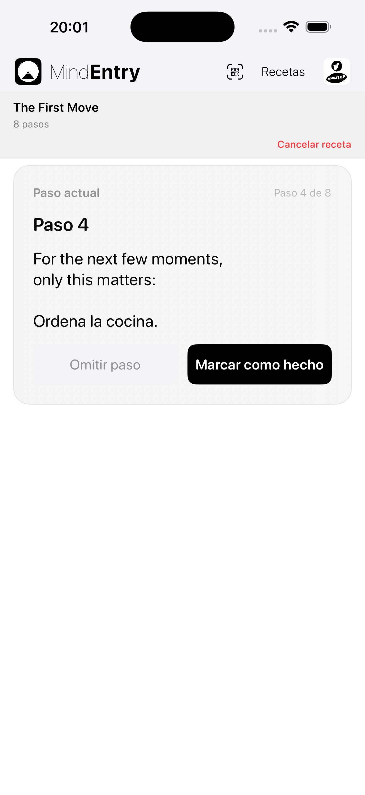
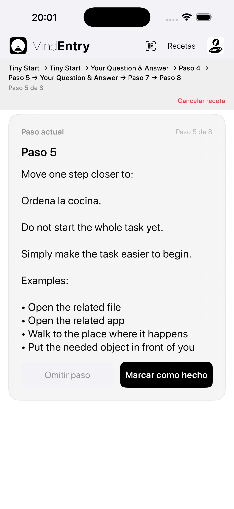
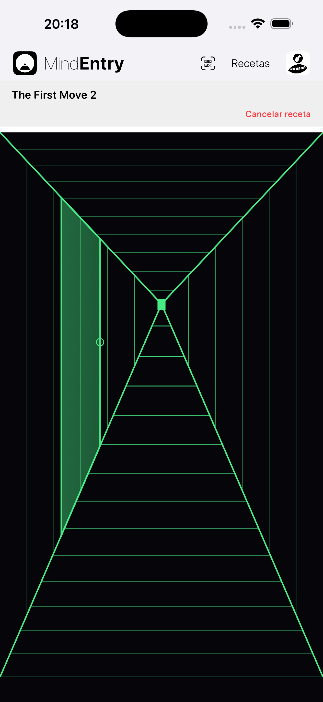
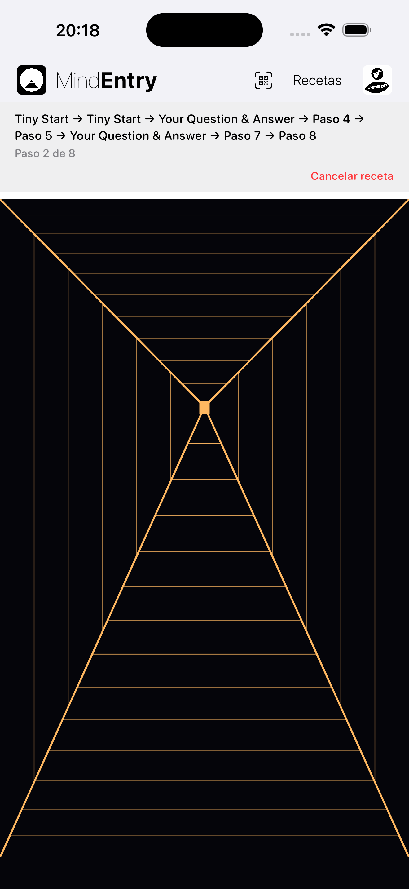

Una forma diferente de recorrer una receta.
Hallway Mode es un modo de visualización alternativo para las recetas de MindEntry.
No cambia la receta en sí. Cambia la forma de recorrerla.
En lugar de pasar directamente de una tarjeta de paso a la siguiente, Hallway Mode crea un espacio tranquilo entre los pasos.
Avanzas por un pasillo. Tras una corta distancia, aparece una puerta. Al abrirla, accedes al siguiente paso.
La misma receta. Una experiencia diferente.
A veces, la parte más difícil de una receta no es el paso en sí. Es verla como un proceso completo.
Hallway Mode reduce esa fricción manteniendo la atención únicamente en lo que viene después.
La receta se convierte en algo que recorres, no en algo que observas.
Directo, claro y eficiente.
Standard Mode presenta una receta como una secuencia de pasos.
Es la mejor opción cuando quieres el camino más simple y rápido a través de una receta.
Paso → Completar → Siguiente paso
Standard Mode resulta útil cuando la mente está preparada para seguir una estructura de forma directa.


Un espacio tranquilo entre los pasos.
Hallway Mode añade movimiento entre los pasos.
El pasillo comienza sin ninguna puerta visible. Avanzas hacia delante. Tras una distancia corta y variable, aparece una puerta. Al tocar el pomo, se abre el siguiente paso.
Paso → Avanzar → Puerta → Siguiente paso
La siguiente puerta aparece después de unos pocos movimientos hacia delante. La distancia cambia de un paso a otro, por lo que la receta se siente menos como una lista de tareas y más como un recorrido guiado.
No eliges entre varias puertas. No retrocedes. No avanzas saltando pasos. El pasillo simplemente te lleva hacia lo que viene después.


El mismo paso puede sentirse diferente según cómo llegues a él.
Cuando la mente está despejada, una lista puede resultar útil.
Cuando la mente está bloqueada, abrumada o muestra resistencia, una lista puede sentirse como una carga más.
Hallway Mode cambia la pregunta de:
¿Cuántos pasos quedan?
a:
¿Dónde está la siguiente puerta?
Ese pequeño cambio puede reducir la fricción cognitiva.
En lugar de pedir al usuario que gestione toda la secuencia, Hallway Mode le da a la mente una única acción sencilla:
Avanzar.
Las recetas interactivas pueden sentirse menos como un formulario y más como un recorrido guiado.
Las Stateful Recipes pueden responder a lo que introduces o eliges durante la ejecución.
En Standard Mode, esa interacción puede sentirse como un flujo estructurado:
Pregunta → Respuesta → Siguiente paso
En Hallway Mode, esa misma interacción puede sentirse más como un paso guiado:
Puerta → Pregunta → Avanzar → Siguiente puerta
Esto es importante cuando la mente está bloqueada.
Una mente bloqueada no suele necesitar más opciones. Necesita un siguiente movimiento más pequeño.
Hallway Mode mantiene la receta interactiva sin obligar al usuario a mantener toda la estructura en mente.
La mayoría de las aplicaciones se centran en los propios pasos.
Hallway Mode se centra en el espacio que hay entre ellos.
Ese espacio permite que el paso anterior termine antes de que comience el siguiente.
La receta sigue ejecutándose en MindEntry. Los pasos siguen funcionando de la misma manera. La diferencia está en cómo llega la mente a cada uno de ellos.
Hallway Mode no hace que una receta sea más fácil eliminando pasos.
Hace que el siguiente paso sea más fácil de afrontar.
Copyright © 2026 MINDBEBOP — All rights reserved.